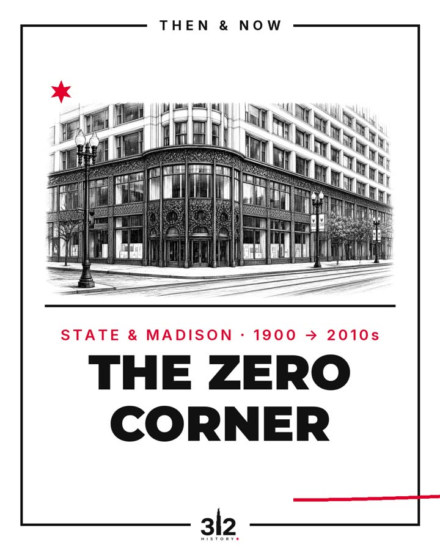

THEN & NOW: THE ZERO CORNER
State & Madison: archive c. 1900 vs. photos from the 2010s.
◉ State Street & Madison Street (the Zero Corner) (map pin approximate)
Follow on Instagram ★
★ 4 FACTS
- ★
c. 1900: streetcars, wagons and crowds on State Street
- ★
Louis Sullivan's store rose here in 1899 and 1903–04; Carson Pirie Scott sold here ~100 years
- ★
Today it's the Sullivan Center; look for the leafy ornament around the corner entrance
- ★
Since the 1909 renumbering, the city's address grid has used this corner as its origin
Visit: free to view from the sidewalk at 1 S. State St. CTA Red Line: Monroe (26 S. State St.). Check CTA alerts first.
Save it Follow @312History
Photos: Library of Congress (PD); David Wilson, CC BY 2.0; Beyond My Ken, CC BY-SA 4.0; Jdunn1189 (PD). Cover: AI-assisted adaptation of his photo, CC BY-SA 4.0.
PRIMARY SOURCES & CREDITS
Full source list
- State & Madison as grid origin (wording: 'the city’s address grid uses it as origin'; ~800 numbers/mile approximate; some streets/areas follow exceptions, so no 'every address' claim); 1909 renumbering; Loop from April 1, 1911; 800 numbers/mile (800 W Halsted, 1600 N North Ave)
- Encyclopedia of Chicago https://encyclopedia.chicagohistory.org/pages/410052.html ("implementation enforced beginning September 1, 1909 ... amended the ordinance in 1910 to include [the Loop], with a compliance date of April 1, 1911")
- 1909 Plan of Re-numbering (Chicago Directory Co.) via Northwestern https://homicide.northwestern.edu/docs_hc/renumbering/Chicago-Street-R… ("800 ... at Halsted Street ... 1600 at North Avenue"; Loop numbers "went into use on April 1, 1911")
- Municipal Code 10-4-020 https://codelibrary.amlegal.com/codes/chicago/latest/chicago_il/0-0-0-… (Madison & State base lines today)
- UChicago Chicago Studies https://chicagostudies.uchicago.edu/grid
- Building: Louis Sullivan for Schlesinger & Mayer; 1898–99 and 1902–04 (City) / 1899 & 1903–04 (SAH, CAC); landmark 1970
- City landmark record https://webapps1.chicago.gov/landmarksweb/web/landmarkdetails.htm?lanI…
- SAH Archipedia https://sah-archipedia.org/buildings/IL-01-031-0080 (cornice "removed in 1940", reproduced; ornament of berries, flowers, leaves, vines; corner pavilion "visible from both streets")
- Chicago Architecture Center https://www.architecture.org/online-resources/buildings-of-chicago/sul… (Carson's moved in 1905, stayed 100+ years; cornice recreated 2006; renamed Sullivan Center)
- Landmark report summary https://www.chicagolandmarkreports.org/landmark/carson-pirie-scott-com… (some ornament recast in aluminum in 1960s renovation → slide says "some pieces recast")
- Caveat: Carson's exit given as 2006 (CAC) vs 2007 (SAH) → slide says "about a century". Rotunda initials LHS/SM single-source (CAC) → not used.
- CORRECTION: earlier draft said "Red Line: Monroe or Washington". Error: Washington (Red) is not an operating Red Line station (Red Line route list on https://www.transitchicago.com/redline/default.aspx runs Lake → Monroe → Jackson, no Washington); I had wrongly inferred it from generic search synthesis. Removed everywhere.
- Monroe (Red Line) official station page https://www.transitchicago.com/station/monr/ : "Address: 26 S. State St." subway; only system alert shown is unrelated (Cermak-Chinatown elevator). Red Line status "Normal Service" on https://www.transitchicago.com/travel-information/railstatus/ . Step-free access not claimed. "About half a block south" is our estimate from the address.
- No interior access/tours claimed; exterior view from public sidewalk only.